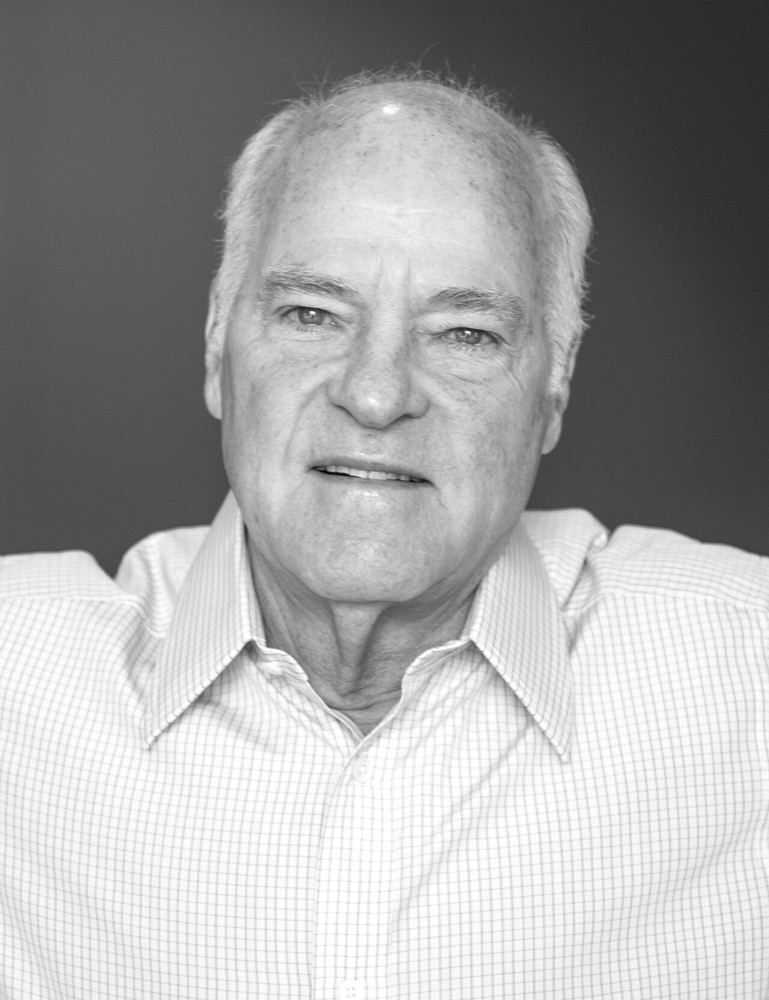
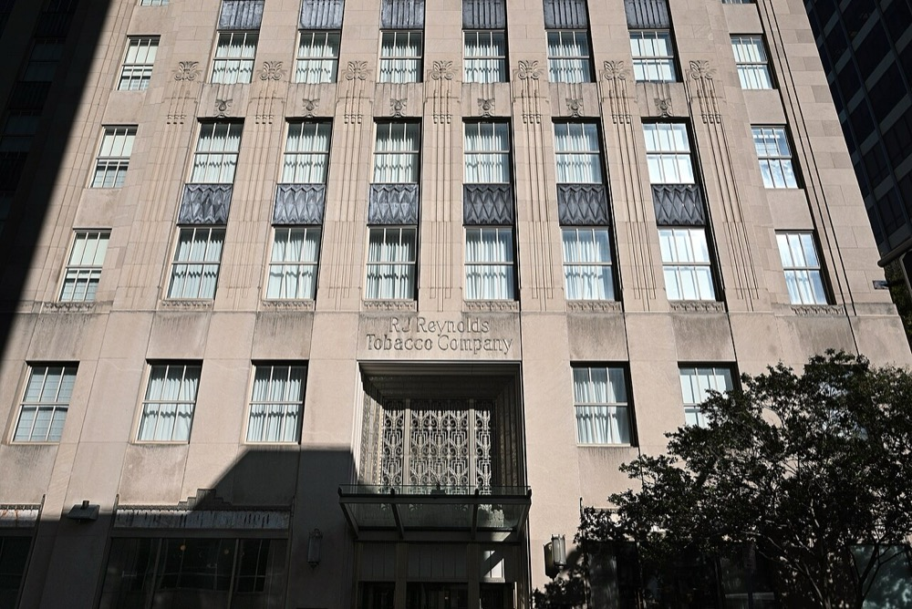
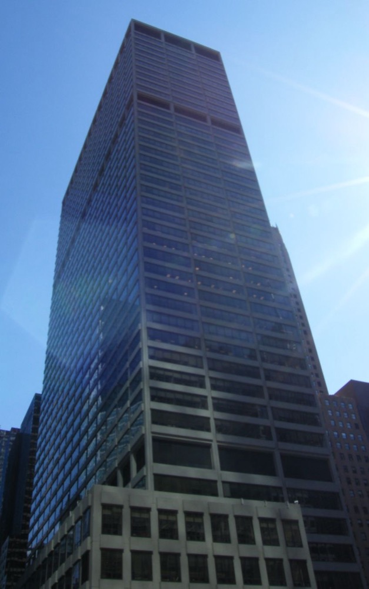
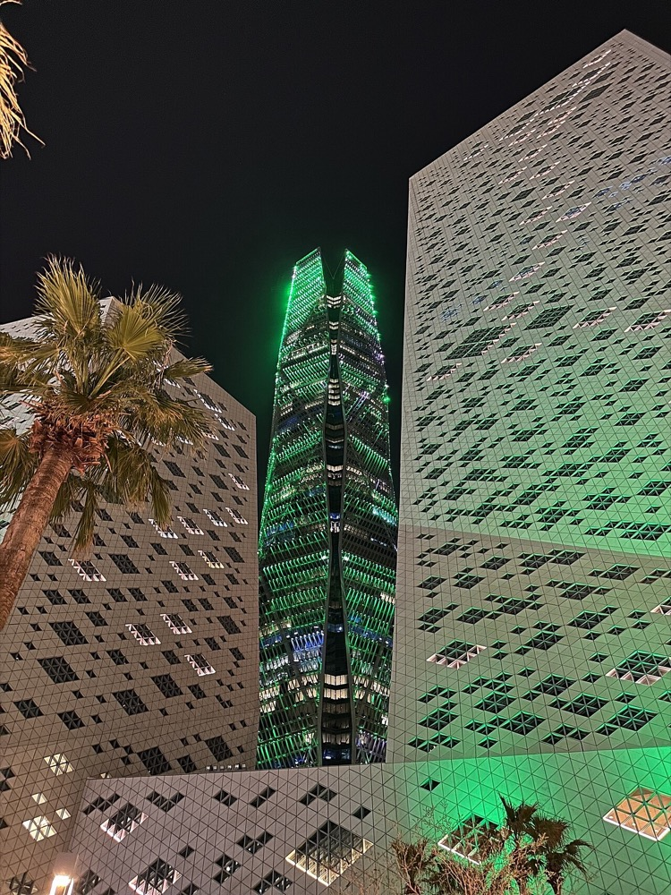
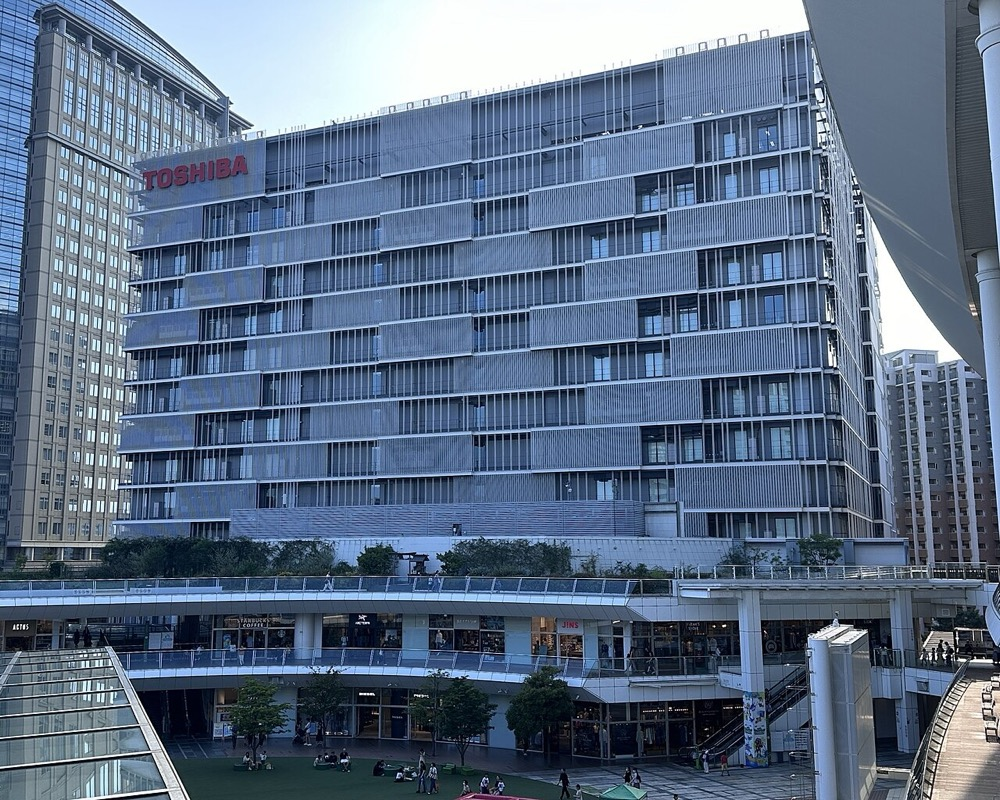
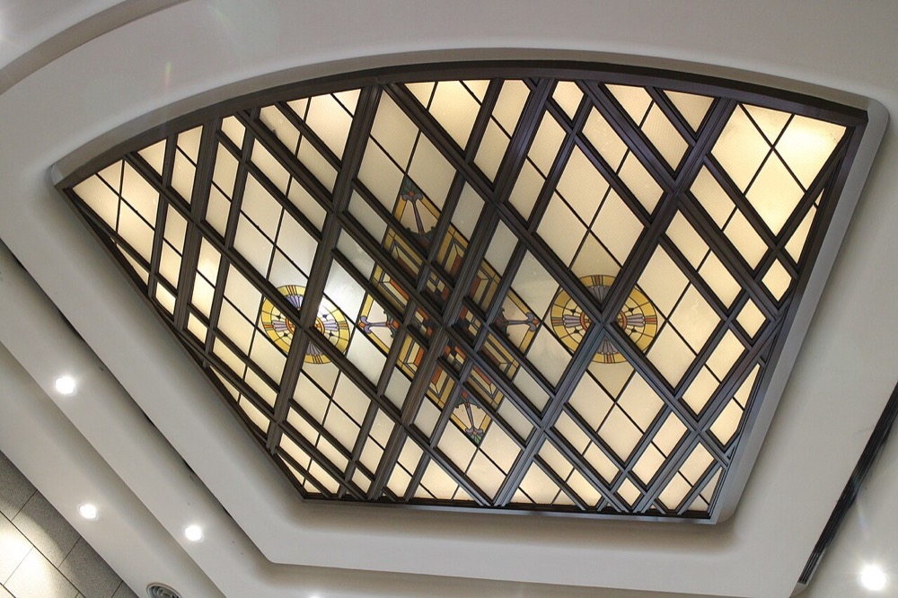

プライベートエクイティ業界の歴史と現在：ARDとKKRの創業から、2026年の世界上位50社と日本市場まで
スマートフォンでは、図を横にスクロールすると全体を表示できます。
1. PEとは何か：投資対象と手法で7つの市場に分かれる
PEは、公開市場で日々売買されない企業や資産に投資する市場の総称です。狭義では企業の支配権を取得するバイアウトを指し、広義ではベンチャーキャピタル・インフラ・不動産・プライベートクレジットまで含みます。
PEファンドは、年金基金・保険会社・政府系ファンドなどの投資家（LP）から資金を集めます。運用会社（GP）が投資先を選び、経営に関与します。上場株式の投資と異なるのは、支配権を持って経営陣の交代・事業の売却・追加買収を実行できる点です。投資先は通常3〜7年保有した後、事業会社への売却・他のファンドへの売却・株式上場のいずれかで売却します。
| 分類 | 投資の内容 | 世界の運用資産残高 |
|---|---|---|
| バイアウト | 企業の支配権を取得し、借入と経営改善で価値を高める | 6.74兆ドル（グロース等と合算）[2] |
| グロース | 支配権を持たずに成長企業へ出資する | （上と合算） |
| ベンチャーキャピタル | 創業初期の未上場企業に出資する | 3.22兆ドル |
| 不動産 | 不動産の取得・開発・再生 | 1.96兆ドル |
| プライベートクレジット | 銀行を介さずに企業へ直接融資する | 1.73兆ドル |
| インフラ | 電力・通信・交通・データセンターへの長期投資 | 1.53兆ドル |
| セカンダリー | 既存のファンド持分や投資先をまとめて売買する | 残高の統計なし。2025年の取引額は2,400億ドル[3] |
表1：7つの市場。Preqin、2024年12月末の世界の運用資産残高。
McKinseyは2025年のプライベート市場全体の残高を約16兆〜16.5兆ドルと推計しています[4]。集計の範囲が異なるため、Preqinの数値と合算はできません。
2. 歴史の年表：ARDからメガファンドまで
PEは、年金の運用規則の改正・ジャンク債・低金利という資金の供給源が現れるたびに拡大し、信用収縮が起きるたびに縮小してきました。
| 年 | 出来事 | 意味 |
|---|---|---|
| 1901 | J.P.モルガンがカーネギー・スチールを約4.8億ドルで買収 | 借入を使った大型買収の先例としてしばしば引用される[5] |
| 1946 | ジョルジュ・ドリオらがARD（American Research and Development）を設立 | 専門の運用者が未上場企業へ組織的に投資した最初の例[1] |
| 1958 | 米国で中小企業投資法（SBIC制度）が成立 | 政府融資を併用する投資会社の制度ができた[1] |
| 1960年代 | リミテッド・パートナーシップ型のファンドが普及 | 案件ごとの投資から、期限付きのファンドで運用する形に移った[1] |
| 1976 | ジェローム・コールバーグ、ヘンリー・クラビス、ジョージ・ロバーツがKKRを創業 | LBOを専門とする投資会社の原型[6] |
| 1979 | 米労働省がERISAのプルーデントマン規則の解釈を改正 | 企業年金がPEなどのリスク資産に投資できるようになった[7] |
| 1982 | ウェスレイがギブソン・グリーティングスを約8,000万ドルで買収。自己資金は約100万ドル | 翌1983年の上場で時価総額は約2.9億ドルになり、LBOの収益性が広く知られた[8] |
| 1980年代 | ドレクセル・バーナム・ランバートのマイケル・ミルケンが高利回り債（ジャンク債）市場を拡大 | 銀行融資だけでは不可能だった大型買収の資金調達ができるようになった[9] |
| 1984 | 投資会社によるベアトリス買収（約64億ドル） | ジャンク債を使った買収が大型化した[10] |
| 1984 | ベイン・キャピタル設立 | コンサルティング会社ベイン・アンド・カンパニーから分かれた |
| 1985 | スティーブン・シュワルツマンとピーター・ピーターソンがブラックストーンを創業 | 現在の運用残高首位の会社 |
| 1987 | デビッド・ルーベンスタインらがカーライルを創業 | ワシントンD.C.を拠点に防衛・政府関連の案件から始めた |
| 1988〜1989 | KKRがRJRナビスコを買収。買収額は約250億ドル、負債を含む取引額は約311億ドル | 1980年代最大のLBO。企業の過剰債務への批判を強めた[11] |
| 1990 | ドレクセル・バーナム・ランバートが破綻 | ジャンク債市場が縮小し、第1次LBOブームが終わった[12] |
| 1992 | デビッド・ボンダーマンとジェームズ・コールターがTPGを創業 | 経営不振企業の再建で実績を作った[13] |
| 1994 | EQT創業（スウェーデン） | 欧州のバイアウトの主要プレーヤーとなる |
| 2000 | リップルウッド連合が旧日本長期信用銀行を約10億円で取得し、新生銀行とした | 日本で外資系PEが知られる契機となった[40] |
| 2001 | ドットコム・バブルの崩壊 | ベンチャー投資と上場による売却が急減した[14] |
| 2006 | ベイン・キャピタル、KKRらがHCAを約330億ドルで買収 | 医療分野の大型非公開化[15] |
| 2007 | KKR・TPGらがTXUを約450億ドルで買収 | 当時最大のLBO。後に経営破綻した[16] |
| 2007 | ブラックストーンがヒルトンを約260億ドルで買収 | 金融危機を経て、PE史上でも最大級の利益を生んだ案件[17] |
| 2007 | ブラックストーンがニューヨーク証券取引所に上場 | 運用会社そのものが上場する形が始まった[18] |
| 2008 | 世界金融危機 | 買収融資と売却が急減した[4] |
| 2010〜2014 | KKR（2010）・アポロ（2011）・カーライル（2012）・アレス（2014）が上場 | 運用報酬を安定収益とする上場企業になった[19] |
| 2018 | ベイン・キャピタル連合が東芝メモリ（現キオクシア）を約2兆円で取得 | 日本で最大のバイアウト（当時）[41] |
| 2021 | 世界のバイアウト案件額が9,750億ドルで過去最高 | 低金利と高い株価が大型案件を支えた[20] |
| 2022 | 米国の利上げ | 借入の費用が上がり、買収と売却が減った[4] |
| 2023 | JIP連合が東芝を約2兆円で非公開化 | 日本のPE投資額は5.8兆円で過去最高となった[42] |
| 2024 | ブラックロックがGIPを約125億ドルで買収 | 大手資産運用会社がオルタナティブの運用会社を買収する動きが続いた[21] |
| 2025 | 米大統領令14330号 | 401(k)などの確定拠出年金でPEなどの資産を検討しやすくする方針を示した[22] |
| 2025 | PIF・シルバーレイク・アフィニティ・パートナーズがエレクトロニック・アーツの買収に合意（企業価値約550億ドル） | 史上最大のLBO。PIFが株式の90%超を保有する見込み[23] |
| 2025 | セカンダリーの取引額が2,400億ドルで過去最高 | 売却が進まない中、投資家が持分を売却して資金を回収した[3] |
| 2026 | 世界の上位50社の持分調整後の企業価値が4.73兆ドル（Gain.pro） | 7章で詳しく示す[24] |


.jpg){kind=link}
.jpg){kind=link}




3. LBOの仕組み：借入で買収し、投資先のキャッシュフローで返済する
LBOは、買収代金の半分前後を借入で賄い、その借入を買収した企業自身の利益で返済する手法です。出資の利益は、利益の成長・売却時の倍率の上昇・借入の返済の3つから生まれます。
LBOでは、ファンドが買収のための会社を作り、その会社がファンドの出資と銀行などからの借入で買収代金を支払います。買収後は対象企業と合併するため、借入の返済義務は対象企業が負います。資本構成は時代で大きく変わり、1980年代には買収代金の85〜95%を借入で賄う案件もありました[25]。近年は出資の比率が40〜50%程度との研究があり[26]、日本では銀行のシニアローンが中心で、借入は企業価値の50〜60%程度です[43]。
番号を押すか、再生ボタンで段階を順に表示できます。
説明用の数値。手数料と税金は含めない。売却時の倍率が12倍に上がると企業価値は1,800億円、出資価値は1,400億円・3.5倍になる。
価値の源泉の比率は研究で異なります。241件の売却を分析した研究では、EBITDAの成長が価値の約41%を占めました[27]。ドイツの案件の研究では、営業と成長による部分が約3分の2、借入による部分が約3分の1です[28]。金利が上がると借入の費用が増え、借入の返済による利益は小さくなります。2022年以降のPEが、利益の成長と追加買収を重視するようになった理由です。
4. 報酬とファンドの仕組み：2-and-20、Jカーブ、DPI
GPの収入は、運用資産に比例する管理報酬と、利益の一部を受け取る成功報酬（キャリー）の2つです。LPにとっての成績は、内部収益率だけでなく、実際に現金で回収できた倍率（DPI）で評価する必要があります。
一般的な条件は年率約2%の管理報酬と利益の約20%のキャリーで、「2-and-20」と呼ばれます。LPが年率8%程度の優先収益を得るまでキャリーが発生しない「ハードルレート」を設ける場合が多いですが、全ファンドに共通する規則ではありません[29]。ファンドの期間は投資期間と回収期間を合わせて約10年が一般的ですが、延長や継続ファンドへの移管で長期化しています。
| 指標 | 計算 | 読み方 |
|---|---|---|
| DPI | 分配額 ÷ 払込額 | LPが現金で回収した倍率 |
| TVPI | （分配額＋未売却分の評価額）÷ 払込額 | 評価額を含む倍率。評価はGPが算定する |
| IRR | キャッシュフローの現在価値をゼロにする割引率 | 早い回収ほど高くなる |
| PME | 同じ時期に株価指数へ投資した場合との比較 | 1を超えると株式市場を上回った |
表3：成績の指標
IRRは、サブスクリプションライン（LPの払込の前にファンドが借りる短期の信用枠）を使うと、払込の時期が遅れるため高く表示されます[30]。PEが株式市場を上回るかには学術的な論争があります。1980〜1995年のファンドを分析したKaplanとSchoar（2005）はPMEを0.93としましたが、上位のGPが次のファンドでも上位になる傾向を示しました[31]。Harris、Jenkinson、Kaplan（2014）は別のデータで米国のバイアウトのPMEを1.27としました[32]。Phalippouは、2006年以降のPEの手数料控除後の成績は株式市場と同程度で、手数料がGPに大きな富を移していると主張しています[33]。
5. 業態の変遷：バイアウト専業から総合オルタナティブ運用会社へ
大手の運用資産の中心は、すでにPEではありません。KKRではクレジットがPEを上回り、アポロでは運用資産の8割がクレジットです。


総合運用会社になった理由は3つあります。第1に、上場した運用会社の株価は、売却の時期で変動するキャリーよりも毎年入る管理報酬で評価されます。第2に、銀行が金融危機後の規制で企業向け融資を減らし、その分をプライベートクレジットが担いました。第3に、保険会社を傘下に入れると、保険料という長期の資金を運用できます。アポロはアセナ、KKRはグローバル・アトランティックを傘下に持ちます。
運用会社の買収：GP同士の統合が進む
| 年 | 買い手 | 対象 | 金額 |
|---|---|---|---|
| 2023 | TPG | アンジェロ・ゴードン（クレジット） | 本稿では確認していない[37] |
| 2024 | ブラックロック | GIP（インフラ。運用資産約1,700億ドル） | 約125億ドル[21] |
| 2024 | ゼネラル・アトランティック | アクティス（インフラ） | 非公表。統合後の運用資産は約960億ドル[38] |
| 2024 | CVC | DIF（インフラ）の60% | 現金約3.3億ユーロと残りの持分の取得義務約5.4億ユーロ[39] |
| 2025 | ブラックロック | HPS（プライベートクレジット） | 約120億ドル[21] |
| 2025 | ブラックロック | Preqin（データ） | 約32億ドル[21] |
表4
6. PE業界の7つの主要テーマ
(1) 売却の停滞：未売却の投資先が約3.2万社
2025年末時点で、PEファンドは約3.2万社の未売却の投資先を保有し、その評価額は約3.8兆ドルです[20]。平均保有期間は約7年で、分配額の残高に対する比率は4年連続で15%未満でした。2021年に高い価格で買収した企業は、売却すると損失が確定するため、売却が遅れています。
(2) 継続ファンドとセカンダリー
GPが自分のファンドの投資先を、新たに作る継続ファンドへ移す取引が増えています。売りたいLPは現金を受け取り、残りたいLPは継続ファンドで保有を続けます。2025年のセカンダリー取引額は2,400億ドル、うちGP主導の取引は1,150億ドルで、2020年の350億ドルから3倍以上に増えました[3][4]。GPが売り手と買い手の両方の立場に立つため、価格の妥当性が論点になります。
(3) プライベートクレジットの拡大と懸念
クレジット関連の運用資産は、アポロが約7,490億ドル、ブラックストーンが約4,430億ドルです。アレスは約4,070億ドルです[44]。市場規模は定義で異なり、主要な直接融資に限ると2024年に6,160億ドル[45]、不動産・インフラ向け融資を含めると約3.5兆ドルの推計もあります[46]。2025年にはファースト・ブランズとトリコロールの破綻で担保の評価と開示の透明性が問われ、2026年初めには個人向けの融資ファンド（BDC）の解約請求が増えました[47]。
(4) 個人資金の取り込み
ブラックストーンの個人向け不動産ファンドBREITの純資産は2025年末で約543億ドル、クレジットファンドBCREDは約476億ドルです[48][49]。2025年8月の大統領令14330号は401(k)でのオルタナティブ投資を検討しやすくする方針を示しましたが、投資を義務付けるものではなく、労働省とSECに制度の見直しを求める内容です[22]。解約に四半期ごとの上限があるため、請求が上限を超えると換金できないリスクがあります。
(5) AIとデータセンター
2024年にブラックストーンはアジア太平洋最大級のデータセンター事業者エアトランクを企業価値240億豪ドル超で買収しました[50]。2025年にはマッコーリーが保有するアラインド・データセンターズを、ブラックロックなどの連合に約400億ドルで売却しました[20]。一方、PEが多く保有するソフトウェア企業には、AIで機能が代替されて価格と契約更新率が下がるリスクがあります。このリスクはソフトウェア企業向け融資の懸念にもなっています[47]。
(6) 中東の政府系ファンド
PIF・ADIA・ムバダラ・ADQ・QIAの湾岸5ファンドは2024年に合計820億ドルを投資し、2025年上期には約400億ドルをPEとの共同投資に充てたと推計されています[51]。LPとしてファンドに出資するだけでなく、エレクトロニック・アーツのように自ら主要な出資者となる案件が増えています。


(7) 規制と税制
米国では2024年6月に第5巡回区控訴裁判所がSECのプライベートファンド規則を無効とし、四半期報告やGP主導取引の規制は施行されませんでした[52]。2025年の税制法（One Big Beautiful Bill Act）では、キャリーを低い税率で課税する扱いは変わりませんでした[53]。EUでは2024年にAIFMD IIが成立し、融資を行うファンドの借入とリスク分散に共通の規則を設けました[54]。
7. 2026年の現状：上位50社で4.73兆ドル
Gain.proの2026年7月の集計では、上位50社のうち北米が32社で、企業価値の合計は約3.23兆ドルと上位50社の68%を占めます。アジアからはシンガポールのGICの1社だけで、日本の投資会社はありません。
この順位は運用資産残高ではありません。Gain.proは投資先ごとに直近の取引額へ成長率を掛けて現在の企業価値を推計し、投資会社の持分比率を掛けて合計しています[24]。取引額がない場合はEBITDAに推定の売却倍率を掛けます。ベンチャー投資と上場株は対象外です。例えばKKRの運用資産は7,440億ドルですが、この集計では3,430億ドルです[34]。政府系ファンドと年金がPEの運用会社と同じ表に入るのは、法人の形態ではなく、PEの投資先の保有額で順位を付けているためです。
| 順位 | 投資会社 | 本社の国 | 持分調整後の企業価値（億ドル） | 投資先の社数 |
|---|---|---|---|---|
| 1 | ブラックストーン | 3,660 | 259 | |
| 2 | KKR | 3,430 | 288 | |
| 3 | EQT | スウェーデン | 1,950 | 151 |
| 4 | アポロ | 1,780 | 143 | |
| 5 | ベイン・キャピタル | 1,520 | 179 | |
| 6 | ブルックフィールド | 1,500 | 97 | |
| 7 | トーマ・ブラボー | 1,400 | 65 | |
| 8 | CVC | 1,350 | 183 | |
| 9 | GIC | 1,350 | 107 | |
| 10 | カーライル | 1,240 | 180 | |
| 11 | CD&R | 1,120 | 48 | |
| 12 | TPG | 1,110 | 174 | |
| 13 | アルディアン | 970 | 164 | |
| 14 | PIF | サウジアラビア | 950 | 113 |
| 15 | パートナーズ・グループ | 950 | 90 | |
| 16 | ウォーバーグ・ピンカス | 950 | 138 | |
| 17 | ヘルマン・アンド・フリードマン | 940 | 22 | |
| 18 | CPPインベストメンツ | 940 | 114 | |
| 19 | アドベント | 930 | 77 | |
| 20 | ビスタ | 930 | 80 | |
| 21 | シルバーレイク | 850 | 52 | |
| 22 | ムバダラ | UAE | 840 | 91 |
| 23 | パーミラ | 840 | 74 | |
| 24 | ブラックロック | 820 | 117 | |
| 25 | TA | 760 | 144 | |
| 26 | マッコーリー | 730 | 149 | |
| 27 | 図で判読できず | 670 | 152 | |
| 28 | IFMインベスターズ | 670 | 33 | |
| 29 | Hg | 660 | 62 | |
| 30 | ADIA | UAE | 650 | 62 |
| 31 | ストーンピーク | 650 | 48 | |
| 32 | オンタリオ州教職員年金 | 610 | 82 | |
| 33 | クリアレイク | 600 | 51 | |
| 34 | ラ・ケス（旧CDPQ） | 580 | 88 | |
| 35 | 図で判読できず | 570 | 76 | |
| 36 | OMERS | 570 | 54 | |
| 37 | PAI | 560 | 48 | |
| 38 | 図で判読できず | 550 | 60 | |
| 39 | プラチナム・エクイティ | 550 | 63 | |
| 40 | レナード・グリーン | 550 | 58 | |
| 41 | デジタルブリッジ | 530 | 34 | |
| 42 | ブリッジポイント | 520 | 113 | |
| 43 | フランシスコ・パートナーズ | 520 | 77 | |
| 44 | ICD（ドバイ投資公社） | UAE | 510 | 25 |
| 45 | 図で判読できず | 510 | 21 | |
| 46 | 図で判読できず | 510 | 46 | |
| 47 | シンベン | 510 | 47 | |
| 48 | ローク | 490 | 19 | |
| 49 | 図で判読できず | 490 | 176 | |
| 50 | エイパックス | 480 | 76 |
表5：数値は元の図から読み取った値。50社の合計4兆7,320億ドルと、上位25社の合計3兆3,080億ドルは、Gain.proの本文の値（上位25社3兆3,090億ドル）と一致する。27・35・38・45・46・49位はロゴが判読できず、原典の表も画像のため社名を確認できなかった。
市場の数値：案件額は回復し、資金調達は減った
2025年の案件額は前年比44%増えましたが、件数は6%減の3,018件でした。大型案件13件が増加額の69%を占めます[20]。エグジット額は47%増の7,170億ドルで、25億ドル超の大型上場は2024年の980億ドルから2,460億ドルに増えました[4]。一方、バイアウトファンドの資金調達額は16%減の3,950億ドルで、未投資の資金（ドライパウダー）は約1.3兆ドルあります[20]。LPは分配が戻らないため、新しいファンドへの出資を絞っています。
8. 日本のPE市場：10年で投資額は12倍に
日本のPE投資額は2015年の0.4兆円から2025年の4.8兆円に増えました。大型案件の大半は外資系が担い、2026年上期には外資系が件数の約20%・金額の約92%を占めました。




日本の主要案件
| 年 | 買い手 | 対象 | 金額 |
|---|---|---|---|
| 2000 | リップルウッド連合 | 旧日本長期信用銀行（新生銀行） | 約10億円[40] |
| 2003 | リップルウッド | 日本テレコムの固定通信事業 | 2,610億円[56] |
| 2014 | KKR | パナソニック ヘルスケア | 1,650億円[57] |
| 2017 | KKR、JIP | 日立国際電気 | 約2,570億円[57] |
| 2018 | ベイン・キャピタル連合 | 東芝メモリ（現キオクシア） | 約2兆円[41] |
| 2020 | ブラックストーン | 武田コンシューマーヘルスケア | 2,420億円[58] |
| 2021 | KKR | 弥生 | 2,400億円[58] |
| 2022 | ベイン・キャピタル、JIC、JIP | 日立金属（現プロテリアル） | 8,173億円[58] |
| 2022 | KKR | 日立物流（現ロジスティード） | 6,714億円[58] |
| 2023 | JIP連合 | 東芝 | 約2兆円[42] |
| 2024 | JIC | JSR | 約9,038億円[59] |
| 2025 | KKR（ベインとの買付競争の後） | 富士ソフト | KKRの提示は約43億ドル[60] |
| 2025 | ブラックストーン | テクノプロ・ホールディングス | 約35億ドル[61] |
| 2026 | KKR | 太陽ホールディングス | 約4,906億円[62] |
| 2026 | アポロ | 日本板硝子 | 企業価値約5,900億円[63] |
表6
案件が増えた理由
- 東証は2023年3月、上場企業に資本コストと株価を意識した経営を要請しました[64]。低PBR企業が非中核事業の売却と非公開化を検討するようになりました。
- 親子上場の解消と、日立・東芝などの事業の再編が、大型案件の供給源になりました。
- 経済産業省は2023年8月に「企業買収における行動指針」を策定し、買収提案を受けた取締役会の対応を明確にしました[65]。
- オーナー経営者の高齢化で、中堅・中小企業の事業承継の案件が増えています。投資会社による買収は2024年に205件で、前年の152件から34.9%増えました[66]。
- 日本のLBOは国内銀行のシニアローンで調達され、借入の金利は低い一桁台です[43]。米国より借入の費用が低いことが、外資系PEが日本に資金を配分する理由の1つです。
日本の運用会社の規模：上位50社との差
| 運用会社 | 規模 |
|---|---|
| JIC（産業革新投資機構） | ファンド投資のコミットメント総額2兆6,005億円（2026年3月末）[67] |
| インテグラル | 運用資産5,765億円（2025年12月期）[68] |
| アドバンテッジパートナーズ | 累計運用資産6,000億円超（2025年9月末）[69] |
| ポラリス・キャピタル・グループ | 累計約5,500億円のファンドを設立（2026年4月）[70] |
| カーライル（日本ファンド） | 第5号ファンド4,300億円（2024年5月）[71] |
表7
日本の最大級の国内系ファンドでも数千億円で、上位50社の最下位エイパックスの480億ドル（約7兆円）とは1桁以上の差があります。2026年のGain.proの本文では、日本は東京が拠点数の増えた都市の1つとして言及されるだけです[24]。年金の配分も小さく、GPIFのオルタナティブ資産はPE・インフラ・不動産の合計で5兆2,067億円、年金積立金全体の1.74%（2026年3月末）です。基本ポートフォリオの上限は5%です[72]。
照合で修正した素材の記述
元の図（Boyan Girginov作、出典Gain.pro「Global 400」、2026年7月）の記述を原典と照合しました。
| 元の図の記述 | 照合の結果 |
|---|---|
| 上位50社が4.7兆ドルを運用する（manage） | 合計は4兆7,320億ドルで一致する。ただし運用資産残高ではなく、投資先の企業価値に持分比率を掛けた推計値である。KKRの運用資産7,440億ドルに対し、この集計では3,430億ドル[24][34] |
| 2020年以降、上位の投資会社は6,132社を買い、2,667社しか売却していない | 原典の本文では確認できなかった。原典は「Global 400の投資会社は過去6年に新規投資12,293件、売却5,839件」と記載している。買収が売却の約2倍という傾向は一致する[24] |
| アジア太平洋の合計2,740億ドルはブラックストーン1社より小さい | GIC 1,350億ドル・マッコーリー730億ドル・IFM 670億ドルの合計は2,750億ドルで、ブラックストーンの3,660億ドルより小さい。原典はGICを「上位50社で唯一のアジア」とし、豪州の2社をアジアと分けて数える[24] |
| 湾岸の4社はすべて政府系ファンド | PIF（サウジアラビア）とムバダラ・ADIA・ICD（いずれもUAE）で、4社とも政府が保有する。正しい |
| CVCに英国の国旗 | CVC Capital Partners plcの登記と登録事務所はジャージーで、上場はユーロネクスト・アムステルダムである。ロンドンは主要拠点の1つ[73] |
| ブルックフィールドを北米に分類 | 正しい。親会社ブルックフィールド・コーポレーションの本社はトロントで、運用会社ブルックフィールド・アセット・マネジメントの登記上の本社はニューヨーク[74] |
| 27・35・38・45・46・49位のロゴ | 図の画素数ではロゴを判読できず、原典の順位表も画像のため社名を確認できなかった。本稿では「判読できず」と表記した |
表8
用語集
| GP（ジェネラル・パートナー） | ファンドを運用する会社。投資先を選び、経営に関与する。 |
| LP（リミテッド・パートナー） | ファンドに出資する投資家。年金基金・保険会社・政府系ファンドなど。 |
| LBO（レバレッジド・バイアウト） | 買収代金の多くを借入で賄い、買収した企業のキャッシュフローで返済する買収。 |
| EBITDA | 利払い・税金・減価償却の前の利益。企業価値の計算の基準に使う。 |
| 企業価値（EV） | 株式の時価総額に純有利子負債を加えた額。 |
| ジャンク債（高利回り債） | 信用格付けが投資適格より低い社債。利回りが高い。 |
| 管理報酬 | 運用資産に一定の率を掛けてGPが受け取る報酬。一般に年率約2%。 |
| キャリー（キャリード・インタレスト） | ファンドの利益の一定割合（一般に約20%）をGPが受け取る成功報酬。 |
| ハードルレート | LPが一定の収益を得るまでキャリーを発生させない基準の利回り。 |
| Jカーブ | ファンドの初期に払込と報酬で累積の収益がマイナスになり、売却が進むとプラスに転じる形状。 |
| DPI | 分配額を払込額で割った倍率。実際に現金で回収した倍率。 |
| TVPI | 分配額と未売却分の評価額の合計を払込額で割った倍率。 |
| PME | 同じ時期に株価指数へ投資した場合と比べた成績。 |
| ドライパウダー | ファンドが出資の約束を受けたが、まだ投資していない資金。 |
| セカンダリー | 既存のファンド持分や投資先をまとめて売買する取引。 |
| 継続ファンド | GPが既存のファンドの投資先を移すために新たに作るファンド。 |
| プライベートクレジット | 銀行を介さずにファンドが企業へ直接行う融資。 |
| BDC | 米国の個人向けの融資ファンド。中堅企業に融資する。 |
| エバーグリーンファンド | 期限を定めず、出資と解約を定期的に受け付けるファンド。 |
| 政府系ファンド（SWF） | 政府が保有し、外貨準備や資源収入を運用する投資機関。 |
| 持分調整後の企業価値 | 投資先の企業価値に投資会社の持分比率を掛けた額。Gain.proの順位の基準。 |